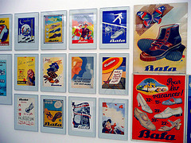

Nejvýznamnější český podnikatel historie - Tomáš Baťa
Tomáš Baťa ovlivnil svou činností celou českou společnost a jeho odkaz a postupy se využívají dodnes. Inspirovat může i současné podnikatele. V čem? A jaký byl jeho život?
Těžké začátky
Tomáš Baťa pocházel ze ševcovské rodiny. Narodil se 3. dubna 1876 ve Zlíně jako třetí dítě otce Antonína Bati. Už od mládí se Tomáš Baťa zajímal o ševcovské řemeslo a ve 14 letech proto odešel z domova do Prostějova, kde pracoval ve společnosti, která vyráběla ševcovské stroje. Ve firmě však brzy skončil a po svém návratu domů se nechal společně se sourozenci vyplatit z rodinného podniku.
Tomáš Baťa poté založil na svého bratra (sám nebyl ještě plnoletý) obuvnickou živnost a začal vyrábět valašskou prošívanou houněnou obuv. Firma měla zhruba 10 zaměstnanců, kteří pracovali na pevnou pracovní dobu za stálý plat, což v té době znamenalo v podstatě revoluční počin. Jenže podniku se nedařilo, v roce 1895 museli Baťové zastavit veškerý svůj majetek a hrozily jim žaloby. Po odchodu Antonína na vojnu se ujal řízení podniku Tomáš a pokusil se o nemožné, vzkřísit zadluženou firmu.
Vzkříšení zadlužené firmy
To se mu díky jeho velké píli a odhodlání podařilo a v roce 1895 byly již všechny dluhy zaplaceny. Brzy se Tomáši Baťovi podařilo postavit první výrobní halu, ve které mohl zaměstnat kolem 40 dělníků a 20 šiček. Po smrti bratra stanul Tomáš definitivně v čele firmy, kde začal aplikovat zkušenosti, které nabral po cestě Amerikou. V roce 1910 již firma měla stovky dělníků a dále se rozrůstala a vznikl tak problém, kde budou pracovníci bydlet. Tomáš Baťa se proto rozhodl postavit jim domy, tzv Baťovy domky, které lze dodnes poznat díky červeným páleným cihlám, z nichž byly postaveny.
Po skončení první světové války dolehla na Baťův podnik krize, tu se však podařilo Baťovi díky geniálním krokům překlenout. Tomáše Baťu totiž napadlo snížit cenu obuvi o 50 %, čímž k sobě přilákal davy zákazníků. Díky deflaci, která v té době panovala, se navíc každý utržený peníz výborně zhodnocoval. V roce 1923 měla firma Baťa již 112 poboček a její majitel se začal rozhlížet po zahraničí. Zde dokázal vybudovat obchodní síť, když drtil svoji konkurenci nižšími cenami a boty Baťa se začaly nosit prakticky v celém světě.
Další revoluční počiny
Dalšímu rozvoji firmy nahrál i vznik samosprávných dílen, které měly vlastní výsledovku a odpovědnost. Tomáš Baťa též vymyslel několik druhů mezd, kterými své zaměstnance odměňoval. Klasikou, která přetrvala dodnes, se staly Baťovy ceny, které končily devítkou a zboží tak díky nim vypadalo levněji. Expanzi společnosti pomohlo zavedení pásové výroby, díky které vzrostla produktivita práce až o 75 %. Obraty firmy v druhé polovině 20. let minulého století dosahovaly miliard korun. V roce 1931 se podnik přeměnil na akciovou společnost s tehdy nevídaným základním kapitálem 135 milionů korun.
Jen o rok později však zasáhla firmu tragédie. Tomáš Baťa totiž 12. července 1932 zahynul při letecké nehodě, když mířil do Švýcarska otevřít novou pobočku. Přestože se Tomáš Baťa nedožil ani šedesáti let, vstoupil svou činností navždy do českých dějin.
Zdroj: http://www.podnikatel.cz
Foto: http://www.flickr.com